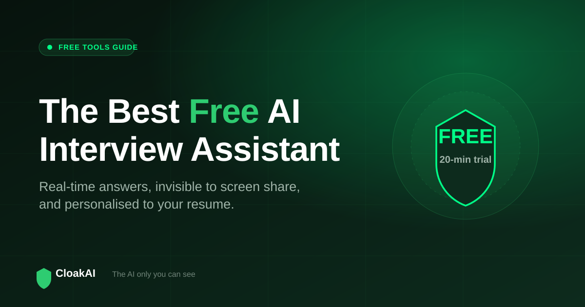
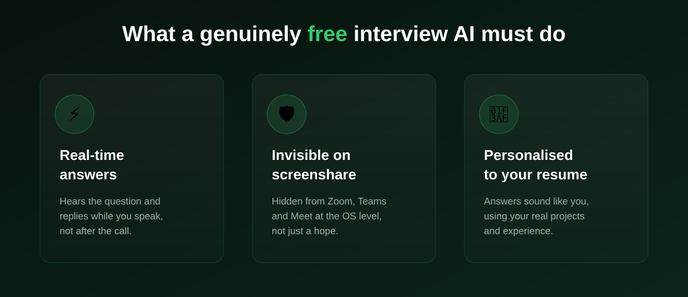

Search for the best free AI interview assistant and you get a wall of results, each promising real-time answers at zero cost. Most of them are not what they claim. Some are practice-only tools dressed up as live assistants. Some are browser extensions that show up the moment you share your screen. And a lot of the "free" ones ask for a card before you can do anything useful. This guide cuts through it: what "free" should really mean, how the popular options actually compare in 2026, and how to test a real real-time free AI interview assistant before you spend a rupee.
The best free AI interview assistant is one you can run during the live interview - not just before it - that stays invisible on screenshare and answers in your voice. CloakAI gives you a genuinely free 20-minute trial with full access to every feature, so you can prove all three of those things yourself before paying anything.
"Free" Means Three Very Different Things
When a tool calls itself a free AI interview assistant, it usually means one of three things, and the difference matters enormously on interview day:
- Free to practice: You can rehearse questions and get feedback, but the tool cannot help you once the real interview starts. Google Interview Warmup and most "mock interview" apps sit here.
- Free tier, limited live use: You get a small window of real-time use (often 5 to 10 minutes) before a paywall. Enough to see the interface, rarely enough for a full round.
- Free trial, full features: You get real, live, real-time use with every feature unlocked for a set amount of time. This is the only kind that lets you actually judge the tool.
If you only remember one thing from this article, make it this: a practice tool and a live interview tool are not the same product, even when both say "free". You want a real-time assistant that works while the interviewer is talking.

The Three Things a Real Free Interview AI Must Do
1. Answer in real time
An interview moves fast. A useful assistant hears the question and starts producing an answer within a second or two, streaming it onto your screen as the interviewer finishes speaking. Anything that needs you to copy-paste the question, switch tabs, or wait for a long round trip is too slow to use naturally in a live conversation.
2. Stay invisible on screenshare
This is where most free tools quietly fail. A browser extension or a normal window shows up in Zoom, Teams, and Google Meet the moment you share your screen or the interviewer records the call. A real interview assistant is invisible at the operating-system level, so screen capture simply cannot see it. On Windows, this is done with content protection built into the OS - something a browser tab fundamentally cannot replicate.
3. Sound like you
Generic answers are easy to spot and easy to challenge on the follow-up. The best assistant reads your resume once and grounds every answer in your real projects, tools, and numbers, so what you say holds up when the interviewer digs deeper. Free tools that skip personalisation give you textbook answers you cannot defend.
Best Free AI Interview Assistants Compared (2026)
| Tool | Free offer | Works live? | Invisible? | Verdict |
|---|---|---|---|---|
| CloakAI | 20 min full trial, no card | ✓ Real-time | ✓ OS-level | Best free real-time option |
| Google Interview Warmup | Unlimited, free | ✗ Practice only | ✗ | Great for rehearsal |
| ChatGPT / Claude free tier | Free with limits | ⚠ Manual | ✗ Visible | Prep, not live |
| Browser extensions (various) | Free tier | ⚠ Small window | ✗ Tab visible | Risky on screenshare |
| GitHub open-source scripts | Free code | ⚠ DIY | ✗ Usually not | Needs your own API key |
New here? Try every feature free for 20 minutes, no signup and no card needed.
Try CloakAI for free 20-minute free trial · No credit card required · Windows 10 & 11What About the "Free AI Interview Assistant" Threads on Reddit?
Reddit is one of the most common places people look for a free AI interview assistant, and the advice there is a mixed bag. You will see three recurring recommendations: browser extensions, free ChatGPT workflows, and open-source projects. Each has the same two blind spots. First, most commenters are describing preparation, not live use. Second, very few threads actually test screenshare visibility - they assume a tool is hidden because the marketing says so.
When you read those threads, apply a simple filter. Ask: does this person's suggestion work during the call, and did they verify it is invisible when the screen is shared or recorded? If the answer to either is no, it is a prep tool, and useful only before the interview. The safest approach is to pick a tool with a real free trial and check both claims on your own machine in a mock call.
And the Open-Source "Free AI Interview Assistant" on GitHub?
There are genuinely clever open-source projects on GitHub that stitch together speech-to-text and a large language model to answer interview questions. If you are an engineer with a spare evening, they are fun. But for the average job seeker they come with real friction: you supply and pay for your own API key, you handle setup and updates yourself, and almost none of them solve screenshare invisibility, which is the hard part. Assembling a GitHub project the night before an interview is a gamble. A ready app with a free trial removes that risk entirely.
The hard, valuable part of an interview assistant is not calling an AI model - anyone can do that. It is doing it in real time, invisibly, and in your own voice. That is exactly what a free trial should let you test.
Not ready to buy? Test every one of those features free for 20 minutes first.
Try CloakAI for free 20-minute free trial · No credit card required · Windows 10 & 11How to Test a Free Interview AI in 10 Minutes
- Set up a mock call. Start a Zoom, Teams, or Meet call with yourself on a second device, and share your screen.
- Check invisibility first. Open the assistant. If you can see it on the shared or recorded screen, stop - it is not safe for real interviews.
- Test real-time speed. Read a question out loud and time how long until an answer appears. One to three seconds is good.
- Test personalisation. Load your resume and ask "tell me about yourself". A good tool references your actual experience, not a template.
- Only then decide. If it passes all three, it is worth paying for. A real free trial lets you do this without spending anything.
Free Trial vs Paid: What CloakAI Costs After the Trial
The free trial is genuinely free, but it is a trial - 20 minutes is enough to run a mock interview, not a week of real ones. If it works for you, CloakAI stays affordable: pricing starts at ₹499 for a 1-hour pack and ₹999 for 3 hours, and the timer only counts down while the app is open and active. There is no monthly subscription and hours do not expire, which is very different from the $16 to $96 per month that most Western tools charge. For Indian job seekers running several interviews, that pay-per-use model is usually the cheapest way to get real-time AI help.
Final Verdict: Which Free AI Interview Assistant Should You Use?
Use a free practice tool like Google Interview Warmup or ChatGPT to prepare in the days before. Then, for the interview itself, use a real-time assistant you have already tested through its free trial. CloakAI is the strongest free option for the live moment because it is the rare tool that is genuinely free to try in full, works in real time, and is invisible at the OS level rather than just hoping the interviewer does not notice. Test it in a mock call, confirm all three things yourself, and you will know within ten minutes whether it belongs in your next interview.
Line it up for your next interview and try the whole thing free for 20 minutes.
Try CloakAI for free 20-minute free trial · No credit card required · Windows 10 & 11